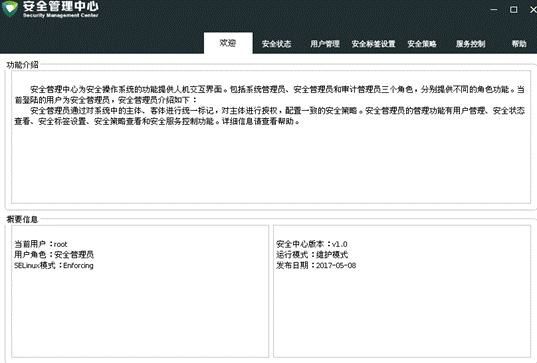
程序启动后，显示欢迎页面。欢迎页面展示当前用户的功能介绍、用户名、用户角色、Selinux模式、版本、运行模式以及发布日期信息。
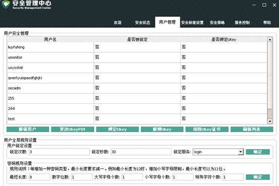
如上图所示，用户管理功能分为用户安全管理和用户全局规则设置功能。
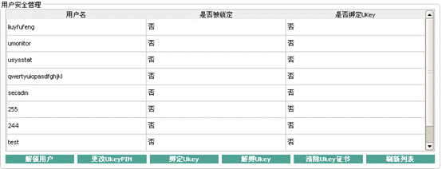
解锁用户：
选中状态为锁定的用户，点击【解锁用户】按钮解锁。
更改UKeyPIN：
点击【更改UKeyPIN】按钮，弹框如下：
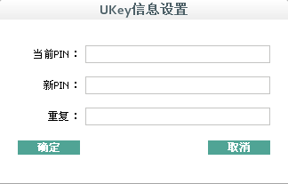
输入当前PIN和新PIN，点【确定】。
绑定或解绑Ukey：
选中用户，点击【绑定Ukey】或【解绑Ukey】，弹框如下：
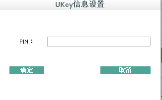
输入PIN，点【确定】即可。
清除Ukey证书：
点击【清除Ukey证书】，弹框：
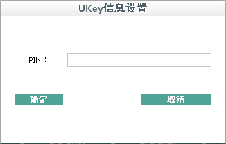
输入PIN，点【确定】。清楚Ukey内所有证书。
1.设置规则后台命令：nfs-enhanced-trylock -d N -u N -s SN
点击设置按钮，调用后台命令，提示成功或失败
界面如下：
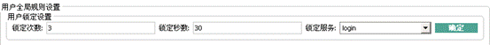
1. 显示当前规则：
后台命令：
cat /etc/pam.d/system-auth-ac | grep "^password.*pam_pwquality.so"
将结果拆解，获得五个约束条件：
最小长度、 最小数字个数、 最少小写字母个数、 最少大写字母个数、其他字符个数。
如图：
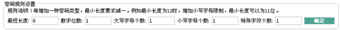
2.设置密码规则：
后台命令：
nfs-enhanced-passwd -m N -d -N -u -N -l -N -o -N
界面如下：
若有些参数未填写，则命令行中去掉该参数项的设置。点击【设置】调用命令，返回成功或失败信息。
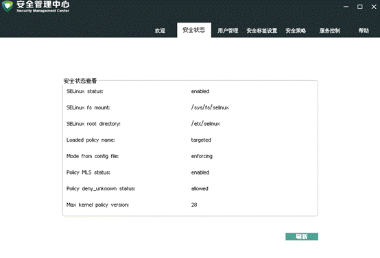
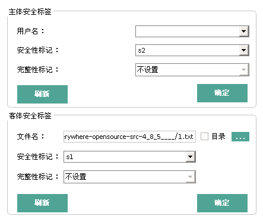
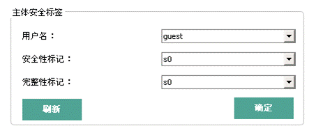
1.刷新功能：
1）获取所有系统用户，显示在下拉菜单中
2）将用户列表的第一个用户的信息显示到上面的界面中。
3）点【刷新】，从界面中获取用户名，在系统用户列表中查找，如果存在则更新界面内容，不存在则提示用户未创建。
2. 设置功能：
点击下拉框，选择好安全性标记的值后，点击【确定】，设置安全性标记。
注意：当前版本设置功能只支持安全性标记的设置，完整性标记设置功能暂不支持。
界面如下：
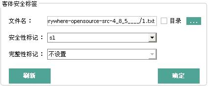
1. 刷新功能：
选择要查看的文件，点击【刷新】，可以查看当前文件的安全性标记和完整性标记
2. 设置功能
点击下拉框，选择好安全性标记的值后，点击【确定】，设置安全性标记。
注意：当前版本设置功能只支持安全性标记的设置，完整性标记设置功能暂不支持。
界面如下：
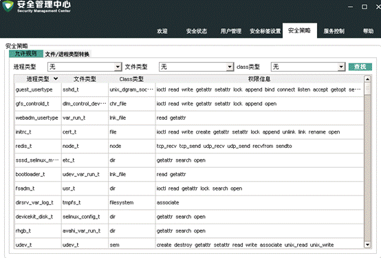
点击列表中【安全策略查看-TE】这项，获取当前系统的安全策略，
1.允许规则
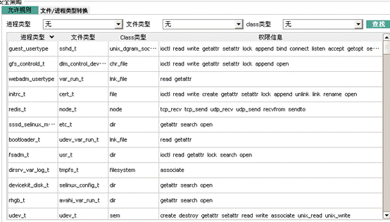
选择“进程类型”、“文件类型”、“class类型”可以过滤结果。
2. 文件/进程类型转换
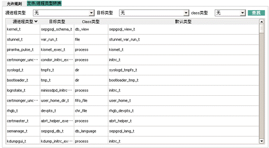
选择“源进程类型”、“目标类型”、“class类型”可以过滤结果。
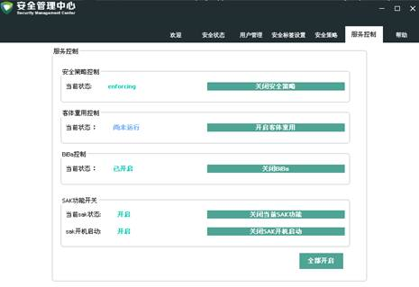
服务控制包括安全策略控制、客体重用开关、BIBa是否启用、sak功能开关四个控制功能。
安全策略开关：是否启用安全策略
客体重用开关：是否启用客体重用
BiBa开关：是否开启完整性验证功能
SAK功能开关：设置sak的当前状态和开机启动状态。